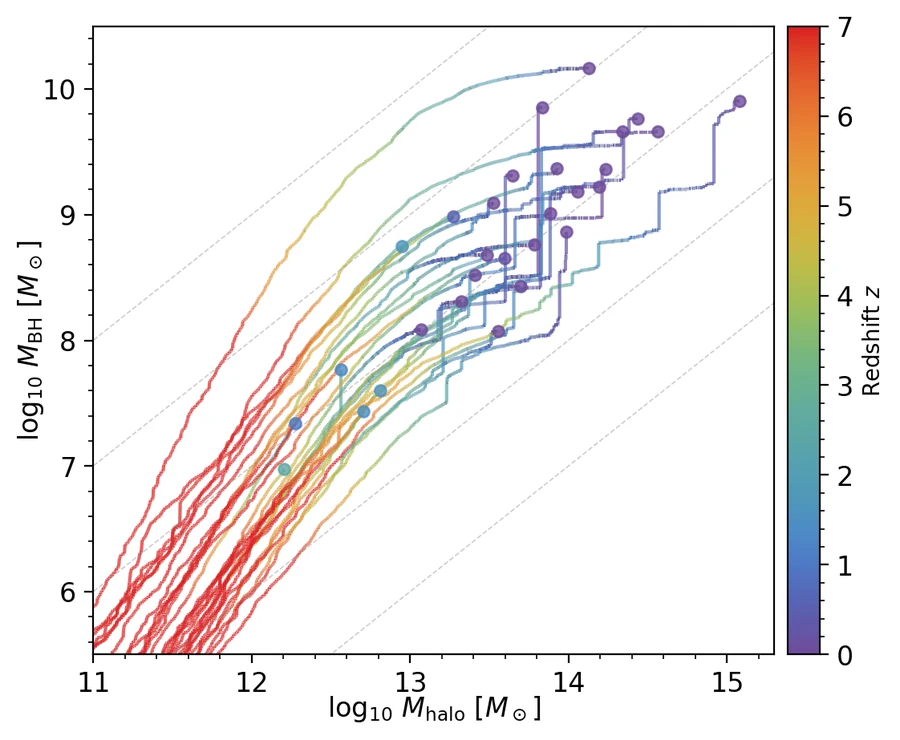
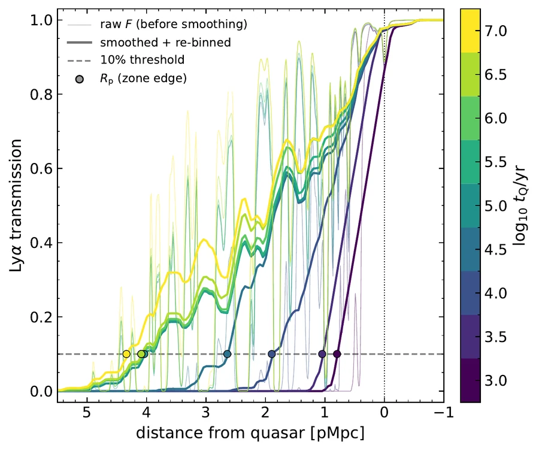
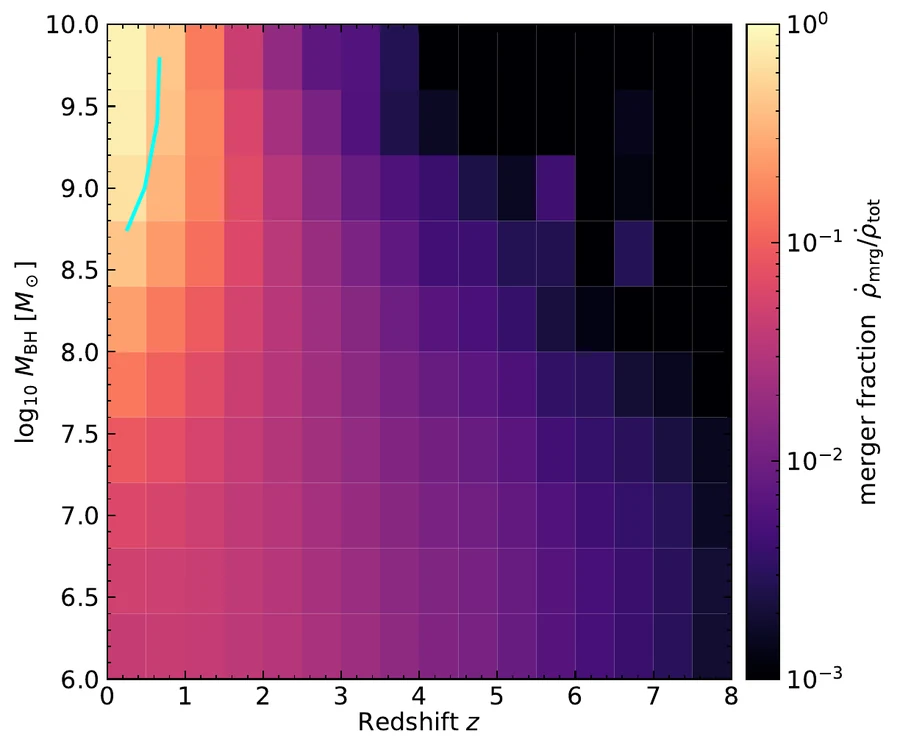

<div class="prose">

	<article>

		<p class="lead">
			I am drawn to problems where theoretical models can be put to a real test. That is where
			the physics lives, and where we learn something new about the Universe. I develop models
			using tools that range from analytical calculations to large cosmological simulations, and
			use inference to ask how well their predictions survive contact with observations.
		</p>

		<p>
			The central thread of my research is the <b>formation and growth of supermassive black
			holes</b> across cosmic time, and the <b>quasars</b> they power. I combine <b>large-volume
			cosmological simulations</b> with <b>empirical models</b> for black holes and quasars, and
			confront them with observations: quasar demographics, <b>clustering measurements</b> from JWST
			and wide-field surveys, and the imprint quasars leave on the intergalactic medium. The
			questions I keep returning to are: <i>Where does quasar activity take place? How do quasars
			relate to their host halos and galaxies? How long does a quasar shine, and how does that set
			the growth of its black hole?</i>
		</p>

		<p>
			Within this theme, I have built <a href="#baqaro">semi-empirical models for black hole
			growth</a>, developed <a href="#clustering">population models for quasar clustering</a>,
			interpreted <a href="#jwst_clustering">JWST measurements of quasar environments</a>, used
			<a href="#prox_zones">quasar proximity zones</a> as a clock for black hole growth, explored what
			<a href="#mergers">gravitational waves</a> tell us about black hole mergers, studied
			<a href="#simulations">massive black holes in hydrodynamical simulations</a>, and looked into
			the puzzling JWST population of <a href="#lrd">&ldquo;little red dots&rdquo;</a>.
		</p>

		<p>
			I am also interested in the broader physics of galaxy formation and cosmology, and I have
			worked on several other topics, including <a href="#outflows">galactic outflows</a> and extended
			[CII] halos, the morphology of <a href="#discs">protoplanetary discs</a>, and parameter inference
			for <a href="#grav_waves">gravitational-wave signals</a>.
		</p>

		<h2 class="research-group">Main research topics</h2>

		<section id="baqaro">
			<header>
				<h2>Semi-empirical models for black hole growth</h2>
			</header>

			<div class="research-figure"></div>

			<div class="research-text">
				How do supermassive black holes assemble their mass, and what does that history look like for an
				individual object rather than for the population as a whole? <b>Semi-empirical models</b> offer
				a way into this question: they place a black hole in every dark matter halo of a cosmological
				simulation, grow it through a few physically motivated rules, and let the data decide what those
				rules should be. Because the halos come from a simulation, the models inherit a realistic cosmic
				environment, and because the rules are few, they can be fitted to observations rather than tuned
				by hand.

				I am particularly interested in the <b>stochastic nature of accretion</b>, where a single
				timescale sets both how fast a black hole grows and how long it shines as a quasar, tying the
				growth of the population to the lightcurves of individual objects. This is the idea behind <b><a
				href="baqaro.html">BAQARO</a></b>, a framework for black hole growth and quasar activity across
				cosmic time. Alongside it, I am interested in <b>analytical descriptions</b> of black hole
				growth, such as the continuity equation for the black hole mass function, and in how they relate
				to the stochastic growth histories seen in the simulations.
			</div>

			<div class="relevant-pubs">
				<h4>Relevant publications</h4>
				<ul>
					<li>{% if site.data.baqaro.paper_url and site.data.baqaro.paper_url != "" %}<a href="{{ site.data.baqaro.paper_url }}">Pizzati et al. 2026</a>{% else %}Pizzati et al. 2026{% endif %} (submitted),
						<i>{{ site.data.baqaro.paper_title }}</i></li>
				</ul>
			</div>
		</section>

		<section id="clustering">
			<header>
				<h2>Quasar clustering and population models</h2>
			</header>

			<div class="research-figure"></div>

			<div class="research-text">
				Quasar clustering measures how strongly quasars trace the underlying matter, and thus how
				massive the <b>dark matter halos</b> that host them are. Together with the luminosity function,
				it tells us what fraction of halos host an active quasar at any given time, and hence how long
				quasars shine. Wide-field surveys have shown that quasars are remarkably strongly clustered at
				high redshift, so much so that reproducing the measurements at \(z\approx4\) has challenged
				models for over a decade.

				I am interested in <b>population models</b> that connect quasars to dark matter halos in large
				cosmological simulations, and reproduce their clustering and demographics at the same time. The
				key ingredient is the stochastic relation between quasar luminosity and halo mass: once it is
				constrained, the models predict where quasars live, how long they are active, and how their
				environments evolve across cosmic time.
			</div>

			<div class="relevant-pubs">
				<h4>Relevant publications</h4>
				<ul>
					<li><a href="https://doi.org/10.1093/mnras/stae329">Pizzati et al. 2024a</a>,
						<i>Revisiting the extreme clustering of \(z\approx4\) quasars with large volume cosmological simulations</i></li>
					<li><a href="https://doi.org/10.1093/mnras/stae2307">Pizzati et al. 2024b</a>,
						<i>A unified model for the clustering of quasars and galaxies at \(z\approx6\)</i></li>
				</ul>
			</div>
		</section>

		<section id="jwst_clustering">
			<header>
				<h2>JWST measurements of quasar environments</h2>
			</header>

			<div class="research-figure"></div>

			<div class="research-text">
				JWST has made it possible to measure the <b>clustering of quasars and galaxies</b> deep into the
				Epoch of Reionization. Slitless spectroscopy maps the [OIII]-emitting galaxies around bright
				\(z\gtrsim6\) quasars, revealing a wide range of environments, from sparse fields to rich
				overdensities, and delivering the first quasar&ndash;galaxy cross-correlation measurements at
				these redshifts.

				I work with the <b>EIGER</b> and <b>ASPIRE</b> teams on interpreting these measurements: turning
				galaxy maps into host halo masses and duty cycles, understanding the role of <b>cosmic
				variance</b> and satellite galaxies in the small volumes that JWST probes, and connecting the
				environments of the first quasars to how their black holes grew. The same techniques are now
				being pushed to \(z>7\).
			</div>

			<div class="relevant-pubs">
				<h4>Relevant publications</h4>
				<ul>
					<li><a href="https://doi.org/10.3847/1538-4357/ad778b">Eilers et al. 2024</a>,
						<i>EIGER VI. The Correlation Function, Host Halo Mass and Duty Cycle of Luminous Quasars at \(z\approx6\)</i></li>
					<li><a href="https://arxiv.org/abs/2602.04974">Huang et al. 2026a</a>,
						<i>Clustering of \(z\sim6.6\) Quasars and [O III] Emitters Constrains Host Halo Masses and Duty Cycles in 25 ASPIRE Fields</i></li>
					<li><a href="https://arxiv.org/abs/2605.11077">Huang et al. 2026b</a>,
						<i>The Impact of Cosmic Variance and Satellites on JWST Clustering Measurements at Redshift around 6</i></li>
				</ul>
			</div>
		</section>

		<section id="prox_zones">
			<header>
				<h2>Quasar proximity zones and lifetimes</h2>
			</header>

			<div class="research-figure"></div>

			<div class="research-text">
				A luminous quasar ionizes the intergalactic medium around it, and the region of enhanced transmission in its spectrum, the <b>proximity zone</b>, records how long and how
				steadily the quasar has been shining. Proximity zones are one of the few <b>clocks
				for quasar activity</b> and black hole growth, and at \(z>7\) they also carry information on the
				neutral fraction of the surrounding gas.

				I am interested in what these zones tell us once we move beyond the picture of a quasar that
				turns on at constant luminosity. My work combines <b>stochastic quasar lightcurves</b> from
				semi-empirical growth models with radiative transfer through the intergalactic medium, to ask
				what proximity zones look like when quasars flicker, what they can and cannot constrain about
				the growth history of the black hole, and how this affects what we infer about the state of the
				early Universe.
			</div>

			<div class="relevant-pubs">
				<h4>Relevant publications</h4>
				<ul>
					<li><a href="https://doi.org/10.1093/mnras/stag388">Onorato et al. 2026</a>,
						<i>Homogeneous measurements of proximity zone sizes for 59 quasars in the Epoch of Reionization</i></li>
				</ul>
			</div>
		</section>

		<section id="mergers">
			<header>
				<h2>Black hole mergers and gravitational waves</h2>
			</header>

			<div class="research-figure"></div>

			<div class="research-text">
				Supermassive black holes grow in two ways: by accreting gas, and by merging with one another
				when their host galaxies and halos merge. Accretion is what makes quasars shine and is well
				charted by their demographics; the <b>merger channel</b> is much harder to observe, and its
				contribution to black hole growth is still uncertain. <b>Gravitational waves</b> offer the
				cleanest way to see it: pulsar timing arrays have found evidence for a nanohertz background from
				the population of supermassive black hole binaries, and LISA will detect individual mergers out
				to the highest redshifts.

				I am interested in whether these signals can constrain the merger channel of black hole growth,
				and in whether they are consistent with what quasars tell us. Quasar observables and binary
				observables such as the pulsar-timing background probe the same black hole population through
				different channels, and a model that follows black holes through both <b>accretion and
				mergers</b> in a cosmological context can be confronted with both at once, testing whether one
				picture of black hole growth can account for everything we see.
			</div>
		</section>

		<section id="simulations">
			<header>
				<h2>Massive black holes in cosmological hydrodynamical simulations</h2>
			</header>

			<div class="research-figure">
				
				<span class="fig-credit">Image: Schaye et al. 2023</span>
			</div>

			<div class="research-text">
				<b>Cosmological hydrodynamical simulations</b> follow the growth of cosmic structure while
				modeling the physics of gas, stars, and black holes, and now reproduce many properties of
				galaxies. The population of supermassive black holes they produce, and especially the rare,
				luminous quasars that can only be captured in very large volumes, is much less tested.

				I use large-volume simulations such as <b>FLAMINGO</b> to compare their quasar populations with
				observations, from the luminosity function to the clustering of bright quasars and the halos
				that host them. This is a direct test of the <b>black hole growth and feedback</b> prescriptions
				these simulations rely on, and a complementary view to the empirical models above, where the
				physics is inferred from the data rather than imposed.
			</div>

			<div class="relevant-pubs">
				<h4>Relevant publications</h4>
				<ul>
					<li><a href="https://doi.org/10.1093/mnras/stag308">Ding et al. 2026</a>,
						<i>The luminosity function and clustering of bright quasars in the FLAMINGO cosmological simulations</i></li>
				</ul>
			</div>
		</section>

		<section id="lrd">
			<header>
				<h2>The JWST little red dots</h2>
			</header>

			<div class="research-figure"></div>

			<div class="research-text">
				JWST has revealed an abundant population of compact, red, broad-line sources, the
				<b>&ldquo;little red dots&rdquo;</b>, whose nature is still debated. If they are accreting black
				holes, they far outnumber the unobscured quasars of similar luminosity found in wide-field
				surveys, which would call for a revision of how supermassive black holes grow in the early
				Universe.

				I am interested in how these objects fit into the picture of early black hole growth, and in
				particular in what their <b>demographics and clustering</b> tell us about the halos they live in
				and their relation to unobscured quasars: whether the two populations can share the same halos,
				or whether little red dots represent a different phase in the life of early black holes.
			</div>

			<div class="relevant-pubs">
				<h4>Relevant publications</h4>
				<ul>
					<li><a href="https://doi.org/10.1093/mnras/staf660">Pizzati et al. 2025</a>,
						<i>&ldquo;Little Red Dots&rdquo; cannot reside in the same dark matter halos as comparably luminous unobscured quasars</i></li>
				</ul>
			</div>
		</section>

		<h2 class="research-group">Other topics</h2>

		<section id="outflows">
			<header>
				<h2>Galactic outflows and [CII] halos at high redshift</h2>
			</header>

			<div class="research-figure">
				
				<span class="fig-credit">Image: NASA</span>
			</div>

			<div class="research-text">
				ALMA has revealed that many galaxies at \(z>4\) are surrounded by <b>extended halos of [CII]
				emission</b>, reaching 10&ndash;15 kpc, which even detailed zoom-in simulations struggle to
				reproduce. During my Master's work I studied whether these halos are the signature of
				<b>galactic outflows</b>: gas expelled by star formation that cools rapidly in the inner halo
				and lights up in [CII]. A semi-analytical outflow model reproduces the observed emission
				profiles, including those of the ALMA ALPINE survey, suggesting that star-formation-driven
				feedback was already shaping galaxies well into the Epoch of Reionization.
			</div>

			<div class="relevant-pubs">
				<h4>Relevant publications</h4>
				<ul>
					<li><a href="https://doi.org/10.1093/mnras/staa1163">Pizzati et al. 2020</a>,
						<i>Outflows and extended [CII] haloes in high-redshift galaxies</i></li>
					<li><a href="https://doi.org/10.1093/mnras/stac3816">Pizzati et al. 2023</a>,
						<i>[CII] Haloes in ALPINE galaxies: smoking-gun of galactic outflows?</i></li>
				</ul>
			</div>
		</section>

		<section id="discs">
			<header>
				<h2>Turbulence and morphology of protoplanetary discs</h2>
			</header>

			<div class="research-figure"></div>

			<div class="research-text">
				The strength of <b>turbulence</b> in protoplanetary discs controls how gas accretes and how
				planets form, but it is notoriously hard to measure. One handle is the <b>vertical thickness</b>
				of the dust layer, which turbulence stirs up. With ALMA resolving rings and gaps in disc images,
				the thickness can be read off from projection effects: a gap looks shallower along the disc's
				minor axis than along its major axis, by an amount that depends on the disc's vertical
				structure. Applying this method to high-resolution <b>DSHARP</b> observations with radiative
				transfer models, we found that the dust layers are thin, implying <b>low levels of
				turbulence</b>.
			</div>

			<div class="relevant-pubs">
				<h4>Relevant publications</h4>
				<ul>
					<li><a href="https://doi.org/10.1093/mnras/stad2057">Pizzati et al. 2023</a>,
						<i>Constraining turbulence in protoplanetary discs using the gap contrast: an application to the DSHARP sample</i></li>
				</ul>
			</div>
		</section>

		<section id="grav_waves">
			<header>
				<h2>Overlapping gravitational-wave signals in next-generation detectors</h2>
			</header>

			<div class="research-figure"></div>

			<div class="research-text">
				Next-generation gravitational-wave detectors such as <b>Cosmic Explorer</b> and the <b>Einstein
				Telescope</b> will observe hundreds of thousands of compact binary mergers per year. Signals
				will be so frequent that they <b>overlap in time</b>, a regime in which standard
				parameter-estimation pipelines are not guaranteed to work. We quantified the biases that arise
				when existing pipelines are applied to overlapping signals, and showed that they can be handled
				with current infrastructure as long as the mergers are more than a second or two apart, while
				closer pairs require new analysis strategies.
			</div>

			<div class="relevant-pubs">
				<h4>Relevant publications</h4>
				<ul>
					<li><a href="https://doi.org/10.1103/PhysRevD.105.104016">Pizzati et al. 2022</a>,
						<i>Toward inference of overlapping gravitational-wave signals</i></li>
				</ul>
			</div>
		</section>

	</article>

</div>
